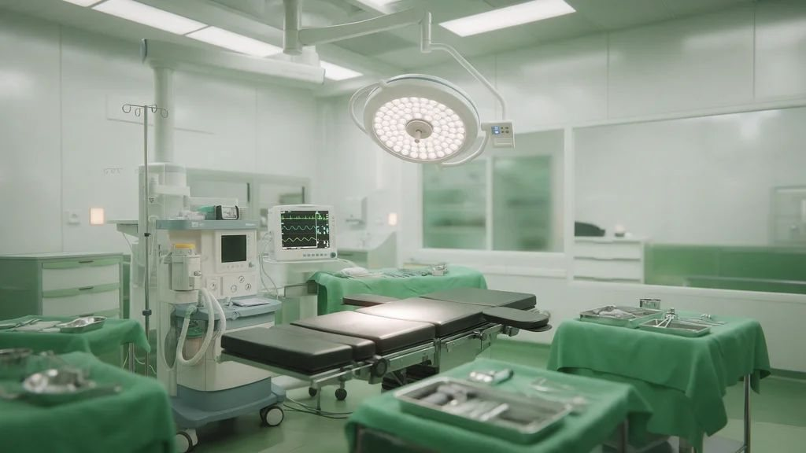
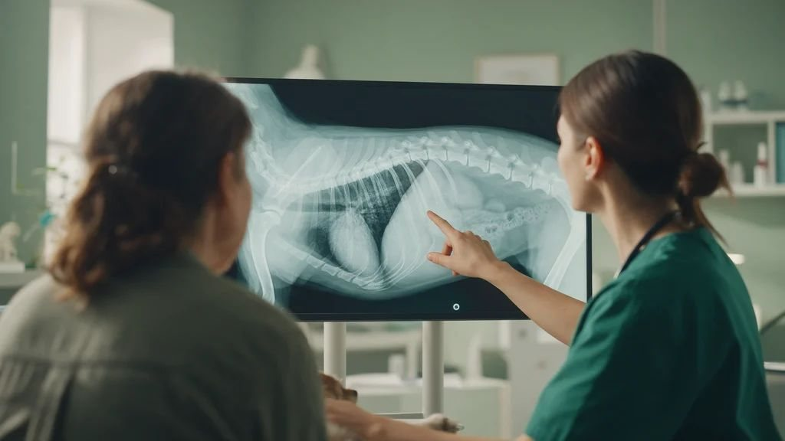
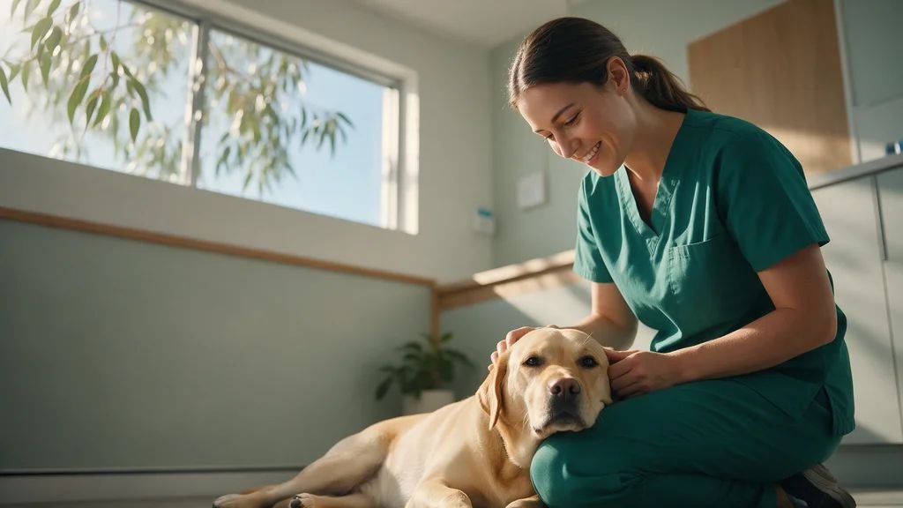

An independent hospital, built around the patient
Kestrel Vale Vet began as a two-room clinic in 2009. Today we are a full hospital with eleven staff, but the same promise: time, honesty and gentle hands.
Our story
Dr Elise Navarro opened our doors after a decade in busy corporate clinics, where 10-minute consults left little room for real conversation.
She wanted a practice where vets had time to listen, where owners understood every recommendation, and where no one felt pressured into treatment they could not afford. Word spread through the local dog park, then the school gate, and the clinic grew one family at a time.
In 2019 we moved into our purpose-built hospital on Wattlebird Lane, designed with input from feline specialists and low-stress handling trainers. We are still fully vet-owned and independent, which means decisions about your pet's care are made in the consult room, not a head office.
What we stand for
Four values guide every decision we make, from how we design our rooms to how we write an estimate.
Time to care properly
Thirty-minute consults mean nothing is rushed and nothing is missed.
Honest, upfront pricing
Written estimates before treatment, and options at more than one price point.
Gentle handling
Low-stress techniques that make each visit easier than the last.
Partnership with owners
You know your pet best. We explain clearly and decide together.
Inside our hospital
Every room was planned for comfort, safety and accurate diagnosis. Take a look around before your first visit.

Three consult rooms
Bright, quiet rooms with non-slip floors and a dedicated cat-only room.

Sterile surgical suite
Modern anaesthetic machines, multi-parameter monitoring and patient warming.

In-house laboratory
Blood, urine and cytology analysed on site, often within 30 minutes.

Digital radiography
High-resolution X-ray and dental imaging, reviewed with you on screen.

Cat-only ward
Separate hospital ward with hiding boxes and covered cages for feline patients.

Recovery garden
A secure, shaded garden where recovering dogs can stretch their legs.
Our journey so far
Seventeen years of steady, local growth. Here are the milestones that shaped who we are.
Two rooms on the high street
Dr Navarro opens the clinic with one nurse and a borrowed X-ray machine.
Surgery and dentistry added
A dedicated surgical theatre opens, followed by digital dental radiography.
Puppy preschool launches
Our weekly classes have since welcomed more than 1,500 local puppies.
Moving to Wattlebird Lane
Our purpose-built hospital opens, with separate cat and dog areas throughout.
Vale Care health plans
Preventive care made affordable with simple monthly payments.

Caring for local pets since 2009Part of the community
We believe a local vet should give back to the place it serves.
- Rescue partner pricingReduced fees for registered rescue groups re-homing animals in our area.
- School visitsOur nurses run responsible pet ownership talks for local primary schools each term.
- Greener practiceSolar power, digital records and recycled surgical packaging since 2021.
- Wildlife careWe treat injured native wildlife free of charge and work with local carers.
Come and meet us
Not sure we are the right fit? Pop in for a tour of the hospital, or book a relaxed meet-and-greet visit for your pet.